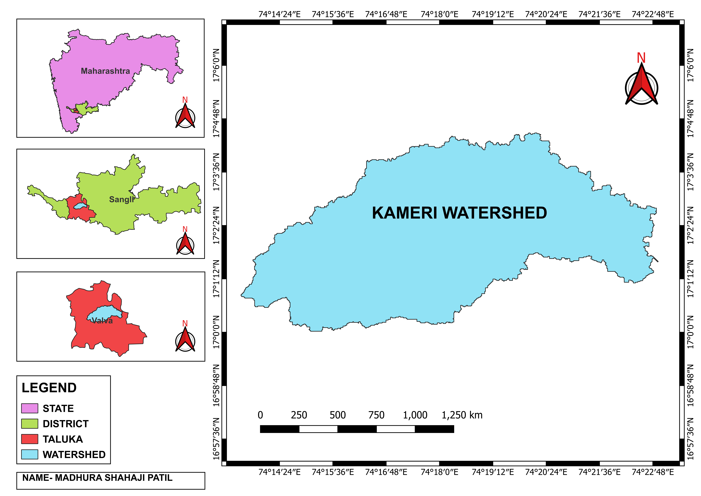
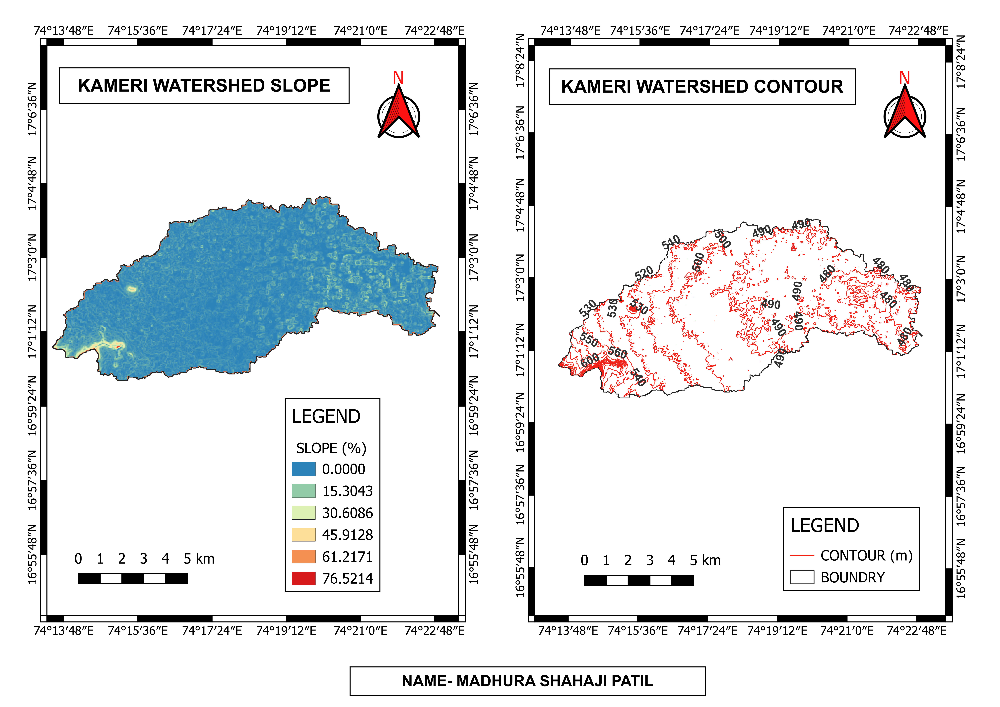

Watershed delineation, contour generation and slope mapping using CartoDEM data and QGIS for hydrological analysis, watershed planning and natural resource management.
Watershed delineation and topographic analysis are essential components of hydrological studies used to understand terrain characteristics and surface water flow. This project involved watershed boundary extraction, contour generation and slope mapping using CartoDEM data in QGIS. The analysis helps in understanding drainage patterns, terrain variations and identifying suitable locations for soil and water conservation, watershed management and environmental planning.
Study Area : Kameri Tanda River Watershed, Warna River Basin (Krishna River Basin), Sub-District Walwa, District Sangli, Maharashtra, India

